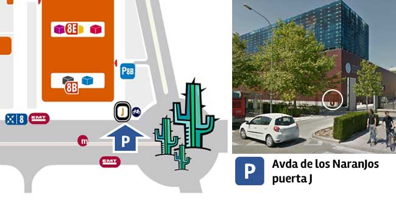
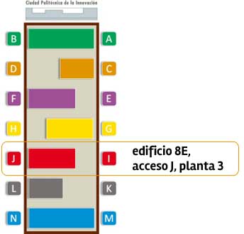

Frontend Open Space sábado 29 marzo 2014
¿Qué es eso del Open Space?
Un Open Space es un tipo de reunión auto-organizada que transcurre a lo largo de una intensa jornada con el fin de debatir, razonar y aprender de las conclusiones resultantes.
Lo que más destaca de este formato es que el guión no se decide hasta el día de la reunión y que se elabora votando las propuestas que los propios asistentes sugieren.
En función del número de asistentes (y las posibilidades del lugar), los temas más votados se repartirán entre 2 o más salas de debate.
Los principios oficiales que sigue un Open Space son estos:
- Cualquiera que venga es la persona adecuada. Si vienes es porque compartes inquietudes con el resto y eso es lo que importa.
- El momento en que empiece es el momento adecuado. Durante los debates olvídate del reloj, no queremos ese tipo de presiones.
- Allá donde ocurra es el lugar adecuado. Si surge un debate en medio del pasillo y te interesa, es un buen lugar donde quedarte.
- Ocurra lo que ocurra es lo único que podría haber ocurrido. No hay lugar para los lamentos, más o menos como en Las Vegas.
- Cuando se ha acabado, se ha acabado. Igual que el reloj no dicta el inicio de un tema, tampoco dictará el final. Si algo acaba antes, se pasa al siguiente asunto. Si necesita más tiempo, el debate continúa.
Además de estos principios, se aplica la ley de los dos pies: si te encuentras en una situación que no te aporta nada o a la que no puedes aportar, usa tus dos pies y cambia de lugar.
Con todos estos puntos claros, ¿no parece interesante organizar un evento así para hablar de los temas que nos preocupan a los frontenders?
Y, ¿sobre qué vamos a hablar?
Como es la primera vez que nos reunimos, no nos atrevemos a fijar ningún tema concreto. Tan solo queremos hablar de cosas de frontenders.
Algunos preferirán hablar sobre temas técnicos como el mantenimiento de código escalable, otros querrán tratar la parte humana en el proceso de diseño-codificación y algún backend infiltrado vendrá a trollear.
A pesar de esto, lo que sí que esperamos es que los temas se traten con bastante profundidad para que el debate nos haga reflexionar a todos.
¿Cuándo y dónde lo hacemos?
Nos reuniremos todos el sábado 29 de Marzo en el espacio que amablemente nos cede la Ciudad Politécnica de la Innovación (ITI edificio 8E, acceso J, planta 3).
 
El evento empezará a las 10h y contará con un descanso para comer entre las 14h y las 16h. Después de la comida volveremos al ataque hasta las 18h.
¡Esto tiene buena pinta! ¿Dónde tengo que apuntarme?
Si quieres participar en el open space tendrás que rellenar este formulario:
Para evitar problemas de desnutrición entre los asistentes y saber para cuántos hay que preparar comida, nos vemos obligados a pedir 5€ a cada persona.
Si a alguien quiere ser nuestro patrocinador para demostrar su pasión por el frontend, estaremos muy agradecidos de recibir su ayuda para lograr un evento todavía mejor para todos.
¿Y ahora qué?
Mientras llega el gran día, puedes ver y sugerir temas a través de Twitter usando el hashtag #TemaFrontendOS. Recuerda que los temas tuiteados se votarán el mismo día del evento junto a los temas que se propongan in situ.
Ok, ¡nos vemos!
Si aún te queda alguna duda, quieres colaborar o simplemente te apetece saludar, escríbenos a frontendersos@gmail.com.